NCERT Solutions For Class 12 Chemistry Chapter 14 Biomolecules
Topics and Subtopics in NCERT Solutions for Class 12 Chemistry Chapter 14 Biomolecules:
| Section Name | Topic Name |
| 14 | Biomolecules |
| 14.1 | Carbohydrates |
| 14.2 | Proteins |
| 14.3 | Enzymes |
| 14.4 | Vitamins |
| 14.5 | Nucleic Acids |
| 14.6 | Hormones |
NCERT INTEXT QUESTIONS
14.1. Glucose or sucrose are soluble in water but cyclohexane and benzene (simple six membred ring compounds) are insoluble in water Explain.
Ans: The .solubility of a solute in a given solvent follows the rule ‘ Like dissolves like’.Glucose contains five and sucrose contains eight -OH groups. These -OH groups form H-bonds with water. As a result of this extensive intermoleeular H-bonding, glucose and sucrose are soluble in water.On the other hand, benzene and cyclohexane do not contain -OH bonds and hence do not form H-bonds with water. Moreover, they are non-polar molecules and hence do not dissolve in polar water molecules.
14.2. What are the expected products of hydrolysis of lactose?
Ans: Lactose being a disaccharide gives two molecules of monosaccharides Le. one molecule each of D-(+) – glucose and D-(+)-galactbse.
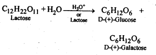
14.3. How do you explain the absence of aldehyde group in the pentaacetate of D-glucose?
Ans: The cyclic hemiacetal form of glucose contains an -OH group at C-l which gets hydrolysed in aqueous solution to produce open chain aldehydic form which then reacts with NH2OH -to form corresponding oxime. Thus, glucose contains an aldehydic group. However, when glucose is reacted with acetic anhydride, the -OH group at C-l along with the other -OH groups at C-2, C-3, C-4 and C-6 form a pentaacetate.
Since the penta acetate of1 glucose does not contain a free -OH group at C-l, it cannot get hydrolysed in aqueous solution to produce open chain aldehydic form and hence glucose pentaacetate does not react with NH2OH to form glucose oxime. The reactions are shown as:
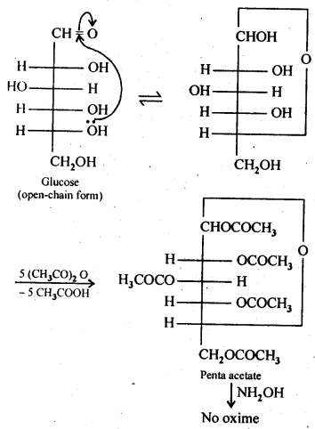
14.4. The melting points and solubility in water of a-amino acids are generally higher than those of corresponding haloacids. Explain.
Ans: a-amino acids as we all know, are dipolar in nature (\(\overset { + }{ N }\)H3-CHR-COO– ) and have strong dipolar interactions. As a result, these are high melting solids. These are also involved in intermolecular hydrogen bonding with the molecules of water and are therefore, water soluble. On the contrary, the haloacids RCH(X)COOH are not dipolar like a-amino acids. Moreover, only the carboxyl group of haloacids are involved in hydrogen bonding with the molecules of water and not the halogen atoms. These have therefore, comparatively less melting points and are also soluble in water to smaller extent.
14.5. Where does the water present in the egg go after boiling the egg?
Ans: When egg is boiled, proteins first undergo denaturation and then coagulation and the water present in the egg gets absorbed in coagulated protein, probably through H- bonding
14.6. Why cannot Vitamin C be stored in our body?
Ans: Vitamin C cannot be stored in the body because it is water soluble and is, therefore, easily excreted in urine.
14.7. Which products would be formed when a nucleotide from DNA containing thymine is hydrolysed?
Ans: Upon hydrolysis, nucleotide from DNA would form 2-deoxyribose and phosphoric acid along-with thymine.
14.8. When RNA is hydrolysed, there is no relationship among the quantities of different bases obtained. What does this fact suggest about the structure of RNA?
Ans: A DNA molecule has two strands in which the four complementary bases pair each other, i.e., cytosine (C) always pair with guanine (G) while thymine (T) always pairs with adenine (A). Thus, when a DNA molecule is hydrolysed, the molar amounts of cytosine is always equal to that of guanine and that of adenine is always equal to thymine.In RNA, there is no relationship between the quantities of four bases (C, G, A and U) obtained, therefore, the base pairing principle, i.e. A pairs with U and C pairs with G is not followed. Therefore, unlike DNA, RNA has a single strand.
NCERT EXERCISES
14.1. What are monosaccharides ?
Ans: Monosaccharides are carbohydrates Which cannot be hydrolysed to smaller molecules.Their general formula is (CH2O)n Where n=3-7 These are of two types: Those which contain an aldehyde group (-CHO) are called aldoses and those which contain a keto (C=O) group are called ketoses.
They are further classified as trioses , tetroses ,pentoses , hexoses and heptoses according as they contain 3,4,5,6, and 7 carbon atoms respectively.For example.
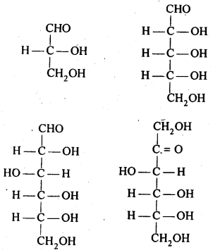
14.2. What are reducing sugars?
Ans: Reducing sugars are those which can act as reducing agents. They contain in them a reducing group which may be aldehydic (-CHO) or ketonic (>C=0) group. The characteristic reactions of reducing sugars are with Tollen’s reagent and Fehling solution. Non-reducing sugars donot give these reactions. For example, glucose, fructose, lactose etc. are reducing sugars. Sucrose is regarded as a non-reducing sugar because both glucose and fructose are linked through their aldehydic and ketonic groups by glycosidic linkage. Since these groups are not free, sucrose is a non-reducing sugar.
14.3. Write two main functions of carbohydrates in plants.
Ans: Two major functions of carbohydrates in plants are following
(a)Structural material for plant cell walls: The polysaccharide cellulose acts as the chief structural material of the plant cell walls.
(b)Reserve food material: The polysaccharide starch is the major reserve food material in the plants. It is stored in seeds and act as the reserve food material for the tiny plant till it is capable of making its own food by photosynthesis.
14.4. Classify the following into monosaccharides and disaccharides. Ribose, 2-deoxyribose, maltose, galactose, fructose and lactose.
Ans: Monosaccharides: Ribose, 2-deoxyribose, galactose and fructose. Disaccharides: Maltose and lactose.
14.5. What do you understand by the term glycosidic linkage?
Ans: The ethereal or oxide linkage through which two monosaccharide units are joined together by the loss of a water molecule to form a molecule of disaccharide is called the glycosidic linkage. The glycosidic linkage in maltpse molecule is shown below:
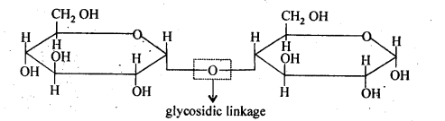
14.6. What is glycogen? How is it different from starch?
Ans: The carbohydrates are stored in animal body as glycogen. It is also called animal starch and its structure is similar toamylopectin which means that it is a branched chain polymer of α-D-glucose units in which the chain is formed by C1 – C4 glycosidic linkage whereas branching occurs by the formation of C1– C6 glycosidic linkage. One main difference between glycogen and amylopectin is the length of the chain. In amylopectin, the chain consists of 20 – 25 α – D – glucose molecules whereas in glycogen, there are 10 -14 molecules of α – D – glucose present. Glycogen is more branched than amylopectin. It is present mainly in liver, muscles and also in brain. Glycogen gets converted into glucose when the body needs it with the help of certain enzymes present in the body. Glycogen has also been found to be present in yeast and fungi.
Starch is a major source of carbohydrates which are very much essential to the human body since they supply energy to the body. It occurs as granules mainly in seeds, fruits, tubers and also in the roots of the plants. The chief commercial sources of starch are wheat, maize, rice, potatoes etc.
14.7. What are the hydrolysis products of (i) sucrose, and (ii) lactose?
Ans: Both sucrose and lactose are disaccharides. Sucrose on hydrolysis gives one molecule each of glucose and fructose but lactose on hydrolysis gives one molecule each of glucose and galactose.
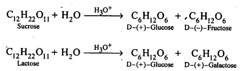
14.8. What is the basic structural difference between starch and cellulose?
Ans: Starch consists of amylose and amylopectin. Amylose is a linear polymer of α-D-glucose while cellulose is a linear polymer of β -D- glucose. In amylose, C -1 of one glucose unit is connected to C – 4 of the other through α-glycosidic linkage. However in cellulose, C – 1 of one glucose unit is connected to C-4 of the other through β – glycosidic linkage. Amylopectin on the other hand has highly branched structure.
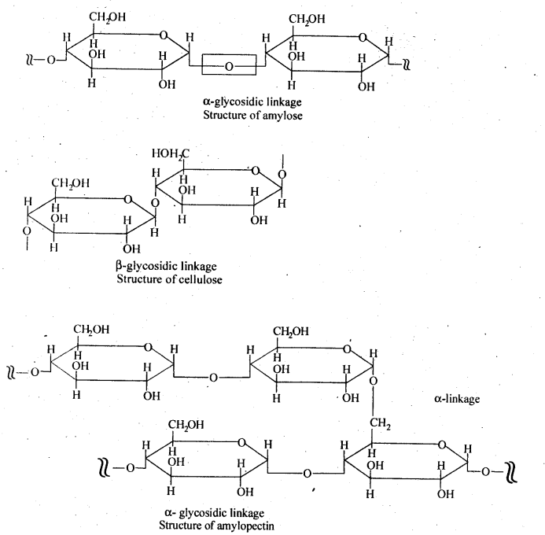
14.9. What happens when D-glucose is treated with . the following reagents.
(i) HI
(ii) Bromine water
(iii) HNO3
Ans:
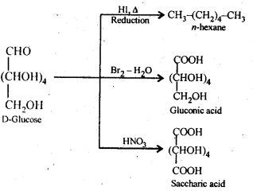
14.10. Enumerate the reactions of D-glucose which cannot be explained with open chain structure. (C.B.S.E. Delhi 2008, C.B.S.E. Sample Paper 2011)
Ans:
Open chain structure of D-glucose contains a free aldehydic group (- CHO). However, it does not give the following reactions:
- D(+) glucose does not react with 2, 4 D.N.P.
- D(+) glucose does not react with NaHSO3.
- D(+) glucose does not restore the pink colour to Schiff’s reagent.
- Penia acetyl glucose formed by carrying acetylation with acetic anhydride does not react with hydroxyl amine
(NH2OH) which is the characteristic reaction of all aldehydes. - D( +) glucose is found to exist in two different crystalline forms which are named as α and β. Both these forms have actually been isolated. For example, α form with m.p. 419 K is obtained by the crystallisation of the saturated solution of glucose prepared at 303 K. Similarly, β-form with m.p. 423 K is isolated by carrying out the crystallisation of the saturated solution of glucose prepared at 371 K. Apart from that the a-form has a specific rotation (α) equal to + 112° while the β- form has specific rotation (α) equal to + 19°.
In the light of the limitations stated above, Tollen stated that an open chain structure for D(+) glucose is probably not practicable. He proposed a cyclic structure which is a hemiacetal structure. In this structure, the aldehydic (CHO) group
is involved in the form of a ring with the -OH group attached to C5 carbon. It is a six membered ring, often called ô-
oxide ring. The ring structure accounts for the two isomeric forms a and shown below.
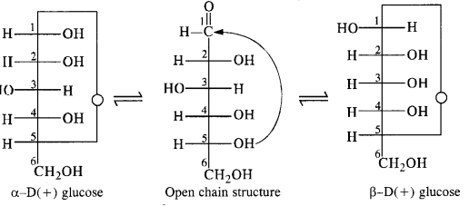
14.11. What are essential and non-essential amino acids? Give two examples of each type.
Ans: α-Amino acids which are needed for good health and proper growth of human beings but are not synthesized by the human body are called- essential amino acids. For example, valine, leucine, phenylalanine, etc. On the other hand, α-amino acids which are needed for health and growth of human beings and are synthesized by the human body are called non-essential amino acids. For example, glycine, alanine, aspartic acid etc.
14.12. Define the following as related to proteins:
(i) Peptide linkage
(ii) Primary structure
(iii) Denaturation
Ans: (i) Peptide bond: Proteins are condensation polymers of α-amino acids in which the same or different α-amino acids are joined by peptide bonds. Chemically, a peptide bond is an amide linkage formed between – COOH group of one α-amino acid and -NH-, group of the other α-amino acid by lo;ss of a molecule of water. For example,
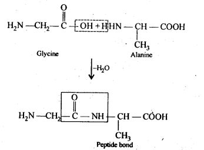
(ii) Primary structure: Proteins may contain one or more polypeptide chains. Each . polypeptide chain has a large number of α-amino acids which are linked to one another in a specific manner. The specific sequence in which the various amino acids present in a protein linked to one another is called its primary structure. Any change in the sequence of α-amino acids creates a different protein.
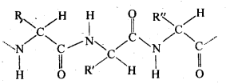
(iii) Denaturation: Each protein in the biological system has a unique three-dimensional structure and has specific biologicalactivity. This is called native form of a protein. When a protein in its native form is subjected to a physical change such as change in temperature or a chemical change like change in pH, etc., hydrogen bonds gets broken. As a result, soluble forms of proteins such as globular proteins undergo coagulation or precipitation to give fibrous proteins which are insoluble in water. This coagulation also results in loss of biological activity of the proteins and this loss in biological activity, is called denaturation. During denaturation, 2° and 3° structures of proteins are destroyed but 1° structure remains intact.
The most common example of denaturation of proteins is the coagulation of albumin present in the white of an egg. When the egg is boiled hard, the soluble globular protein present in it is denatured and is converted into insoluble fibrous protein.
14.13. What are the common types of secondary structure of proteins?
Ans:
Secondary structure of protein refers to the shape in which a long polypeptide chain can exist. These are found to exist in two types :
- α-helix structure
- β-pleated sheet structure.
Secondary Structure of Proteins:
The long, flexible peptide chains of proteins are folded into the relatively rigid regular conformations called the
secondary structure. It refers to the conformation which the polvpeptide chains assume as a result of hydrogen bonding
between the > C= O and > N-H groups of different peptide bonds.
The type of secondary structure a protein will acquire, in general depends upon the size of the R-group. If the size of the
R-groups are quite large, the protein will acquire ct-helix structure. If on the other hand, the size of the R-groups are relatively
smaller, the protein will acquire a β – flat sheet structure.
(a) α-Helix structure: If the size of the R-groups are quite large, the hydrogen bonding occurs between > C = O group
of one amino acid unit and the > N-H group of the fourth amino acid unit within the same chain. As such the polypeptide
chain coils up into a spiral structure called right handed ct- helix structure. This type of structure is adopted by most of the
fibrous structural proteins such as those present in wool, hair and muscles. These proteins are elastic i.e., they can be
stretched. During this process, the weak hydrogen bonds causing the a – helix are broken. This tends to increase the length of
the helix like a spring. On releasing the tension, the hydrogen bonds are reformed, giving back the original helical shape.
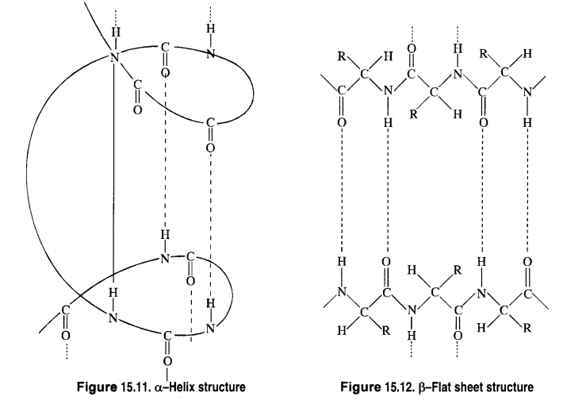
(b) β—Flat sheet or β—Pleated sheet structure: If R-groups are relatively small, the peptide chains lie side by side in a zig
zag manner with alternate R-groups on the same side situated at fixed distances apart. The two such neighbouring chains are held together by intermolecular hydrogen bonds. A number of such chains can be inter-bonded and this results in the formation of a flat sheet structure These chains may contract or bend a little in order to accommodate moderate sized R-groups. As a result, the sheet bends into parallel folds to form pleated sheet structure known as β – pleated sheet structure. These sheets are then stacked one above the other like the pages of a book to form a three dimensional structure. The protein fibrion in silk fibre has a β – pleated sheet structure. The characteristic mechanical properties of silk can easily be explained on the basis of its β – sheet structure. For example, silk is non-elastic since stretching leads to pulling the peptide covalent bonds. On the other hand, it can be bent easily like a stack of pages because during this process, the sheets slide over each other.
14.14. What types of bonding helps in stabilising the α-helix structure of proteins?
Ans: α-helix structure of proteins is stabilised through hydrogen bonding. (a) α -Helix structure. If the size of the R-groups are quite large, the hydrogen bonding occurs between > C = O group of one amino acid unit and the > N- H group of the fourth amino acid unit within the same chain. As such the polypeptide chain coils up into a spiral structure called right handed a—helix structure. This type of structure is adopted by most of the fibrous structural proteins such as those present in wool, hair and muscles. These proteins are elastic i.e., they can be stretched. During this process, the weak hydrogen bonds causing the α-helix are broken. This tends to increase the length of the helix like a spring. On releasing the tension, the hydrogen bonds are reformed, giving back the original helical shape.
14.15: Differentiate between globular and fibrous proteins.
Ans. (i) Fibrous proteins: These proteins consist of linear thread like molecules which tend to lie side by side (parallel) to form fibres. The polypeptide chains in them are held together usually at many points by hydrogen bonds and some disulphide bonds. As a result,intermolecular forces of attraction are very’ strong and hence fibrous proteins are insoluble in water. Further, these proteins are stable to moderate changes in temperature and pH. Fibrous proteins serve as the chief structural material of animal tissues.For example, keratin in skin, hair, nails and wool, collagen in tendons, fibrosis in silk and myosin in muscles.
(ii) Globular proteins: The polypeptide chain in these proteins is folded around itself in such a way so as to give the entire protein molecule an almost spheroidal shape. The folding takes place in such a manner that hydrophobic (non-polar) parts are pushed inwards and hydrophilic (polar) parts are pushed outwards. As a result, water molecules interact strongly with the polar groups and hence globular protein are water soluble. As compared to fibrous proteins, these are very sensitive to small changes of temperature and pH. This class of proteins include all enzymes, many hormones such as insulin from pancreas, thyroglobulin from thyroid gland, etc.
14.16. How do you explain the amphoteric behaviour of amino acids?
Ans: Amino acids contain an acidic (carboxyl group) and basic (amino group) group in the same molecule. In aqueous solution, they neutralize each other. The carboxyl group loses a proton while the amino group accepts it. As a result, a dipolar or zwitter ion is formed.
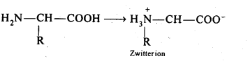
In zwitter ionjc form, a-amino acid show amphoteric behaviour as they react with both acids and bases.
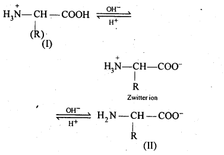
14.17. What are enzymes?
Ans: Enzymes are biological catalyst. Each biological reaction requires a different enzyme. Thus, as compared to conventional catalyst enzymes are very specific and efficient in their action. Each type of enzyme has its own specific optimum conditions of concentration, pH and temperature at which it works best.
14.18. What is the effect of denaturation on the structure of proteins?
Ans: Denaturation of proteins is done either by change in temperature (upon heating) or by bringing a change in the pH of the medium. As a result, the hydrogen bonding is disturbed and the proteins lose their biological activity i.e., their nature changes. During the denaturation, both the tertiary and secondary structures of proteins are destroyed while the primary structures remain intact.
14.19. How are vitamins classified? Name the vitamin responsible for the coagulation of blood.
Ans: Vitamins are classified into two groups depending upon their solubility in water or fat: (i) Water soluble vitamins: These include vitamin B-complex (B1, B2, B5, i.e., nicotinic acid,B6, B12, pantothenic acid, biotin, i.e., vitamin H and folic acid) and vitamin C.
(ii) Fat soluble vitamins: These include vitamins A, D, E and K. They are stored in liver and adipose (fat storing) tissues. Vitamin K is responsible for coagulation of blood.
14.20. Why are vitamin A and vitamin C essential to us? Give their important sources.
Ans: Vitamin A is essential for us because its deficiency causes xerophthalmia (hardening of cornea of eye) and night blindness.
Sources: Fish liver oil, carrots, butter, milk, etc. Vitamin C is essential for us because its deficiency causes scurvy (bleeding of gums) and pyorrhea (loosening and bleeding of teeth). Sources: Citrous fruits, amla, green leafy vegetables etc.
14.21. What are nucleic acids ? Mention their two important functions.
Ans: Nucleic acids are biomolecules which are found in the nuclei of all living cell in form of nucleoproteins or chromosomes (proteins contains nucleic acids as the prosthetic group).
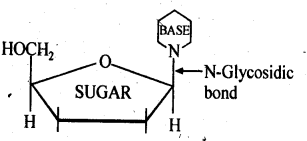
Nucleic acids are of two types: deoxyribonucleic acid (DNA) and ribonucleic acid.(RNA).
The two main functions of nucleic acids are:
(a) DNA is responsible for transmission of hereditary effects from one generation to another. This is due to its unique property of replication, during cell division and two identical DNA strands are transferred to the daughter cells.
(b) DNA and RNA are responsible for synthesis of all proteins needed for the growth and maintenance of our body. Actually the proteins are synthesized by various RNA molecules (r-RNA, m-RNA) and t-RNA) in the cell but the message for the synthesis of a particular protein is coded in DNA.
14.22. What is the difference between a nucleoside and a nucleotide?
Ans: A nucleoside contains only two basic components of nucleic acids i.e., a pentose sugar and a nitrogenous base. It is formed when 1- position of pyrimidine (cytosine, thiamine or uracil) or 9-position of purine (guanine or adenine) base is attached to C -1 of sugar (ribose or deoxyribose) by a β-linkage. Nucleic acids are also called polynucleotides since the repeating structural unit of nucleic acids is a nucleotide.
A nucleotide contains all the three basic . components of nucleic acids, i.e., a phosphoric acid group, a pentose sugar and a nitrogenous base. These are obtained by esterification of C5, – OH group of the pentose sugar by phosphoric acid.
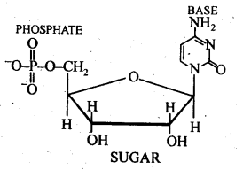
14.23. The two strands in DNA are not identical but are complementary. Explain.
Ans: The two strands in DNA molecule are held together by hydrogen bonds between purine base of one strand and pyrimidine base of the other and vice versa. Because of different sizes and geometries of the bases, the only possible pairing in DNA are G (guanine) and C (cytosine) through three H-bonds, (i.e.,C = G) and between A (adenine) and T (thiamine) through two H-bonds (i.e., A = T). Due to this base -pairing principle, the sequence of bases in one strand automatically fixes the sequence of bases in the other strand. Thus, the two strands are complimentary and not identical.
14.24. Write the important structural and functional differences between DNA and RNA.
Ans:
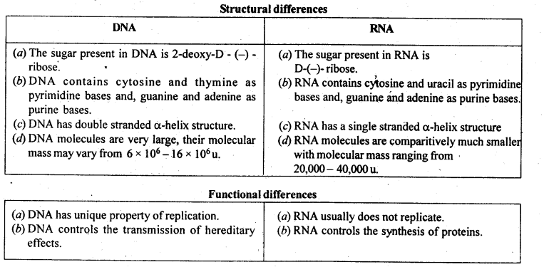
14.25. What are the different types of RNA found in the cell?
Ans: There are three types of RNA:
(a) Ribosomal RNA (r RNA)
(b) Messenger RNA (m RNA)
(c) Transfer RNA (t RNA)
More Resources for CBSE Class 12: